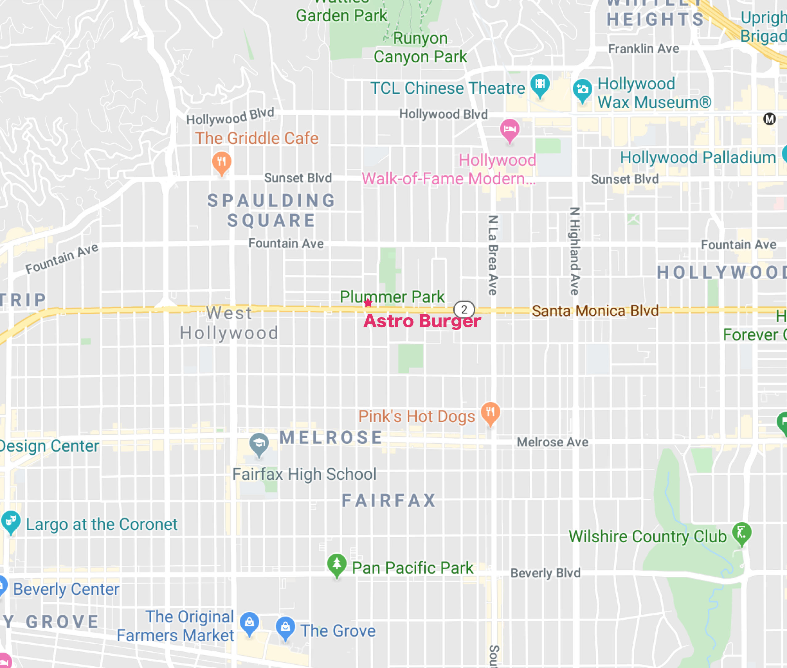
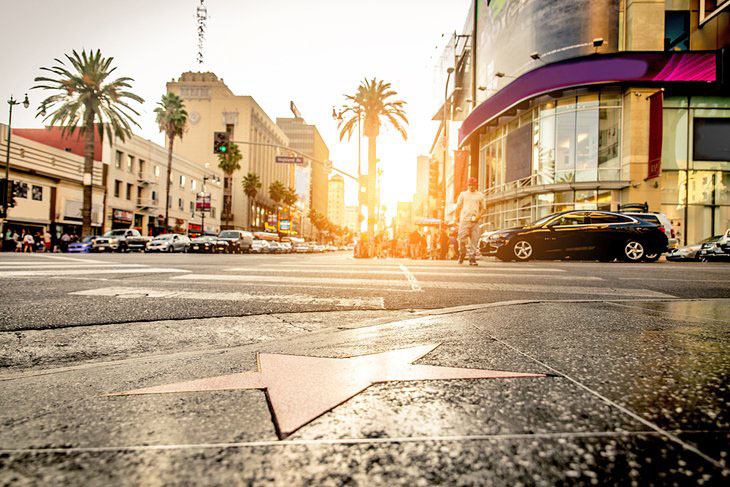
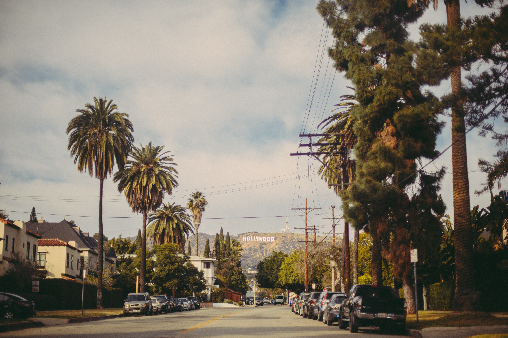
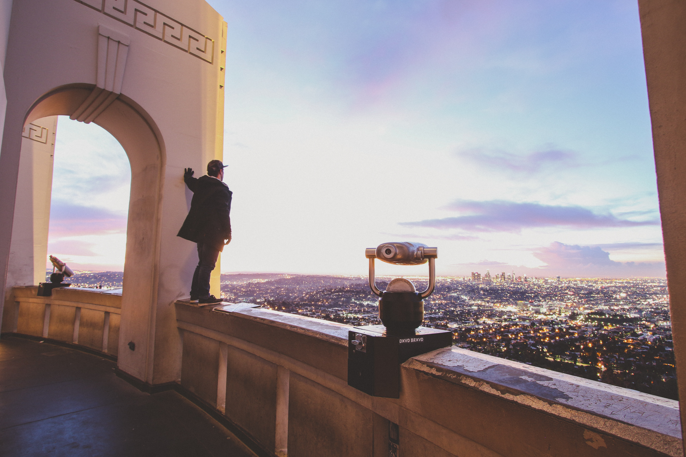

Location
所要時間約45分〜1時間 ロサンゼルス国際空港から最速ウーバー、リフトなど利用 料金は約$30〜40（利用する時間帯、人数によって異なる）
所要時間45〜1時間 Flyaway（空港ーハリウッド直行バス）利用 最安料金$8!
ただしバスが1時間に１本なのでタイミングによっては待ち時間から到着まで2時間弱かかることあり。ハリウッドでピックアップ可能です！ 民泊ハリウッドから徒歩3分！Astro Burger West Hollywoodで大体の立地がわかると思いますので、そちらで検索していただき、ご予約確定した際には住所をお知らせするという形にさせていただきます。ご了承ください！ 



人気観光地
1. Walk of Fame
2. TCL Chinese Theater 3. Hollywood Sign 4. Griffith Observatory 5. Melrose Ave.©2020 Minpaku Hollywood All Rights Reserved.